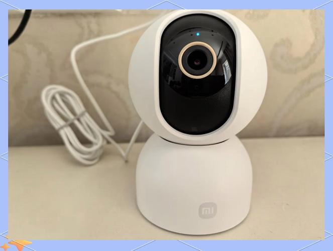

小米智能摄像机 3 Pro（云台版）

小米家用云台摄像机的主力型号，500 万像素 3K 画面细节清晰，支持人形与宠物侦测、哭声识别，可与米家设备联动。物理镜头遮蔽兼顾隐私，性价比突出，适合看家、看娃、看宠物的多场景使用。
客观评测
小米智能摄像机 3 Pro 搭载 500 万像素传感器，输出约 3K 画面，白天细节清晰，放大后远处物体仍可辨识。夜视支持红外与微光全彩，微光下色彩还原可用，全黑环境靠红外补光。云台支持水平 360° 与约 109° 垂直转动，可设置巡航与看守位。AI 侦测涵盖人形、宠物与哭声，误报率较低。存储支持 microSD 卡（最大 256GB）与云存储，物理镜头遮蔽保护隐私。
主观点评
把它装在客厅角落后，基本成了家里的「远程眼睛」：上班时看猫捣乱，回放时 3K 画质把它的表情拍得清清楚楚。人形侦测推送比较克制，不会一条条轰炸手机，这点比旧款好太多。云台转起来偶尔有点声响，夜里安静时能听到，装在卧室门口会介意。隐私遮蔽一拨就关，家里有人时也安心。两百出头的价位，这台的完成度很难挑出毛病。
优点与不足
- 3K 画面细节充足，放大后人脸与文字仍可辨认
- AI 人形/宠物/哭声侦测准确率不错，推送少而精
- 物理镜头遮蔽保护隐私，价格亲民
- 云台转动有轻微机械噪音
- 云存储需额外订阅，本地卡存储有覆盖风险
参数规格
| 传感器 | 约 1/2.7 英寸 CMOS，500 万像素 |
|---|---|
| 分辨率 | 3K（约 2960×1666） |
| 夜视 | 红外夜视 + 微光全彩 |
| 云台 | 水平 360°、垂直约 109°（约） |
| 存储 | microSD 卡最大 256GB + 小米云存储 |
| 侦测 | AI 人形侦测、宠物侦测、哭声侦测 |
| 隐私 | 物理遮蔽镜头，一键休眠 |
| 通话 | 双向语音通话 |
| 连接 | Wi-Fi 2.4GHz/5GHz（约） |
| 供电 | 5V/2A Type-C 供电 |
| 智能联动 | 米家 App 联动门锁、传感器等设备 |
| 视角 | 对角视场角约 110°（约） |